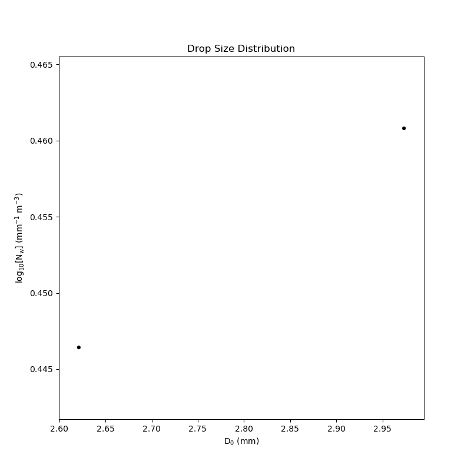

Simple Example¶
A simple example using PyDSD. This example reads in a OTT APU Disdrometer file, calculates the radar variables, and plots a few of them. Author: Joseph C. Hardin
import numpy as np
import matplotlib.pyplot as plt
import pydsd as pyd
filename = '../testdata/sgpdisdrometerC1.b1.20110427.000000_test_jwd_b1.cdf'
dsd = pyd.read_arm_jwd_b1(filename)
#dsd = pyd.read_parsivel_nasa_gv(filename)
#Read in the Parsivel File
dsd.calculate_dsd_parameterization()
fig = plt.figure(figsize=(8,8))
# pyd.plot.plot_dsd(dsd)
pyd.plot.plot_NwD0(dsd)
plt.title('Drop Size Distribution')
plt.show()
Total running time of the script: ( 0 minutes 0.124 seconds)